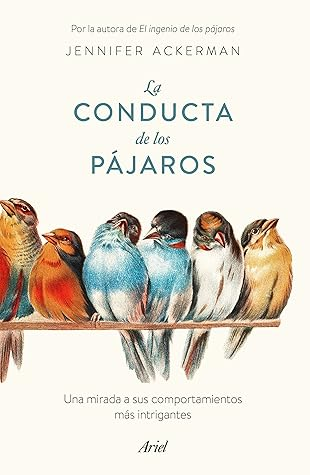

La conducta de los pájaros: Una mirada a sus comportamientos más intrigantes
Reseña por Jorge I. Zuluaga

Ver detalles · Ver reseña en GoodReads (necesita cuenta)
Y es que, después de leer con este dos libros sobre pájaros de Jennifer, creo que si empezara otro y otro más, y así casi indefinidamente, no solo el tema no se agotaría, sino que además, por lo menos yo, no dejaría de seguir comprándolos y leyéndolos. Los pájaros, y las aves en general, son inagotables.
"La conducta de los pájaros" es una secuela de "El ingenio de los pájaros" (mi reseña sobre este último por aquí), pero en realidad parece simplemente la continuación de ese, su primer best seller. En este nuevo libro, Jennifer expande su mirada desde el "ingenio" hacia otros aspectos de la vida de las aves, igualmente atravesados por su avanzada cognición. Desde sus sofisticados sistemas de producción de sonido y los resultantes lenguajes que los humanos nos esforzamos por entender, pasando por el juego (¡increíble capítulo!), hasta llegar al sexo y la crianza.
Los pájaros son animales tan conocidos por todos y tan desconocidos por la mayoría. Cada página de Jennifer cierra un poquito la brecha que nos separa a la inmensa mayoría de los humanos de los que posiblemente son los animales más complejos que ha producido la evolución natural en 3800 millones de años.
Se puede pensar que la emoción que tengo fresca después de leer este libro, o el hecho de no ser un experto en insectos eusociales o monos del Nuevo Mundo —ni siquiera en biología en general—, me hace exagerar. Pero si de algo me puedo preciar por mi área de investigación (astrobiología y ciencias planetarias) es de haber leído un poquito sobre la evolución de la vida compleja en la Tierra, la evolución de la inteligencia y la posibilidad de vida en otros mundos; lecturas que me han enseñado a apreciar los productos más increíbles de la evolución. En todas esas lecturas difícilmente había visto descrito de forma tan clara el hecho de que en el árbol de la vida (o la telaraña, si quieren), al menos en los rincones que conocemos bien, no hay un grupo de organismos en los que hayan surgido mecanismos biológicos más sofisticados y comportamientos más extraños que en las aves.
Si aun así siguen creyendo que exagero, dejemos que sea Jennifer, que lleva años estudiando e investigando los pájaros, quien lo diga: [Los pájaros] son tan incoherentes, tan impredecibles y tan variados como ningún otro grupo de animales de la Tierra. Punto.
¿Y nosotros? Me refiero a nuestra especie, tan admirada y cuyos logros parecen superar a los de cualquiera que haya existido antes, ¿incluso después? También Jennifer se permite aclararlo: Es posible que [como especie] estemos solos cuando nos inventamos razones según las cuales somos especiales.
Como siempre, el libro está lleno de datos increíbles. Imposible resumirlos en una reseña. Algunos los he compartido de forma desorganizada en Twitter, cuál más increíble que el anterior.
¿Defectos? Como cualquier libro. El primero y más notable es la total ausencia de fotografías. Aparte de unos bonitos dibujos que abren cada capítulo, el libro no tiene una sola imagen. Cero. Entiendo que eso hace que muchos lectores podamos disfrutar de un texto a un precio razonable. Pero ¡por favor!, ¡todos queremos conocer a las aves de las que nos habla Jennifer!
En más de una ocasión (y como debe pasarnos a todos), me pasé minutos alejado de la lectura tratando de encontrar la imagen de alguna de las increíbles especies de pájaros descritas por Jennifer.
Y es que por las páginas de "La conducta de los pájaros" desfilan cerca de ~200 especies diferentes (estimo que hay en promedio una cada dos páginas). Me quito el sombrero delante de María Dolores Ábalos, la traductora de la edición que tuve el placer de leer. Personalmente, no me imagino el tamaño de la tarea de encontrar el nombre vulgar en castellano de todas las especies recogidas en el libro. Y es que, como curiosidad, Jennifer rara vez usa el nombre científico de los pájaros de los que habla, una elección que, personalmente, encuentro muy acertada.
Otro defecto es que la lectura se pone a veces un poco pesada. Esto, por el exceso de nombres de pájaros distintos o el excesivo nivel de detalle en muchas de las anécdotas que relata.
Por estas razones no le pongo sus merecidas cinco estrellas. Se supone que la calificación y la reseña deben servir a otros para tomar la decisión de si invertir el tiempo en leer el libro. Digamos que, de cada cinco personas que leen esta reseña y deciden leer "La conducta de los pájaros", tal vez una encontrará el libro imposible de terminar.
Solo me resta decir que espero que haya pájaros en otros planetas.
¡Lean el libro! ¡lean a Jennifer Ackerman!